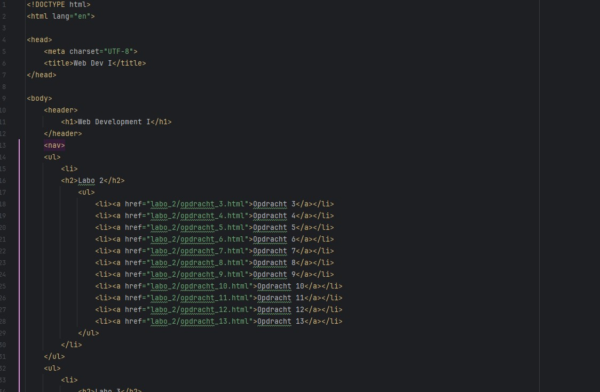
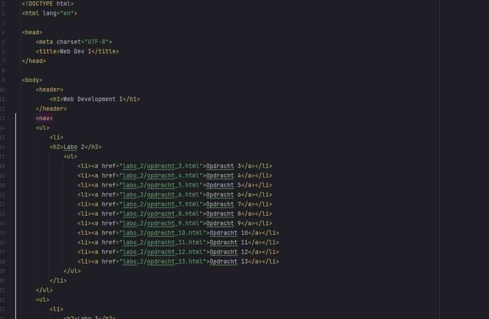

Het blad
Dit is de afbeelding op quality setting 100:
Dit is de afbeelding op quality stetting 90:
Dit is de afbeelding op quality setting 40:
Mijn besluit hierover is nu dat je wel kunt zien dat de kwaliteit vermindert, maar de bestandsgrootte ook.
Dit is de afbeelding op quality setting 100:
Dit is de afbeelding op quality stetting 90:
Dit is de afbeelding op quality setting 40:
Mijn besluit hierover is nu dat je wel kunt zien dat de kwaliteit vermindert, maar de bestandsgrootte ook.
Dit is het screenshot voor compressie:
Dit is op quality setting 40
Mijn besluit is dat het moeilijker word om de text te kunnen lezen door de vermindering van de kwaliteit, maar dat de bestandsgrootte wel kleiner word.